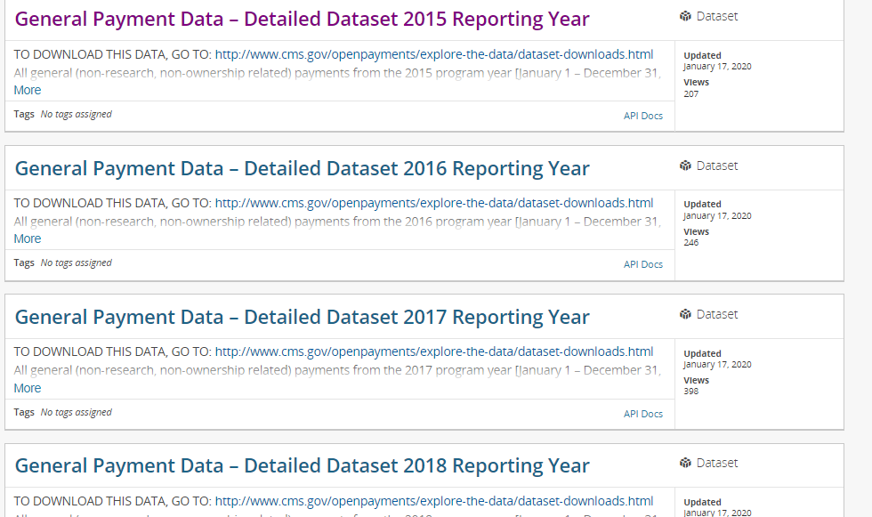
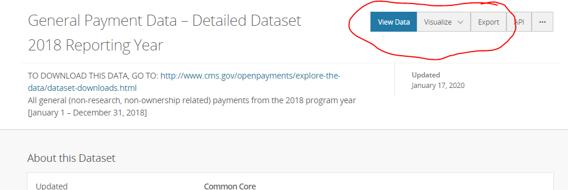
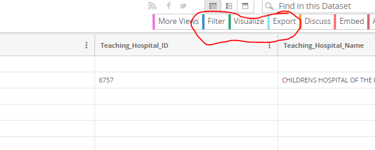
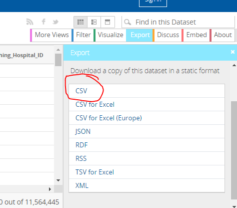

Description of Data File:
We used four partial data files from OpenPaymentsData.CMS.gov for years 2015-2018. There was a file for each year analyzed. Each of these years had a total of about 10M records each with 75 columns of data so we think that comparing across years is a good representation. The data covers open payments made from corporate companies in the medical field. Each row corresponds to a payment made and the columns describe details of that payment
Description of Data Columns:
There a total of 75 columns of data availible for anlaysis, and not every field was used. Below we will describe the data fields we used that are not obvious. Recipient City would be an example of an obvious data field.
TODO: MAKE SURE YOU MENTIONED EACH FIELD
Recipient_Type: Recipients can either be individual physician's or teaching hospitals.
Payment_Types: There are 5 types of payments. Cash, dividends, in-kind items/services, stock, and options/ownership interest. Dividends are re-occuring payments (typically quarterly) made by many corperations to its shareholders. In-kind items/services is when a company donates their services,tools, labor instead of cash. Stock is when a company gives ownership shares of a public organization. Options/Ownership Interest is when a company gives ownership shares of a private organization.
Indicate_Drug_or_Biological_or_Device_or_Medical_Supply_1: Payements are categorized as drug, biological, devise, medical supply, or no value.
Directions to Grab Data:
Click HERE to the download page for the open payments data. For our analysis we took a portion of the 2015-2018 data. Our data only included where Recipient State was for Wisconssin. The page should look like this:
If you want to download the full dataset for a particular year, click export as shown below. However, if you click view data you have the option to filter your data before you export to csv.
The below page will give you a sense of all the raw column fields availible and the data in them. Clicking filter allows you to filter on one or many fields of interest to you.
When you are done, hit export and chose your export type. We used csv, but you can also download as JSON, Excel, and more.
